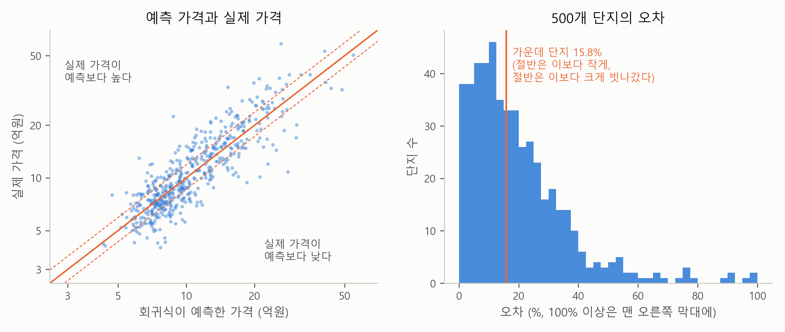
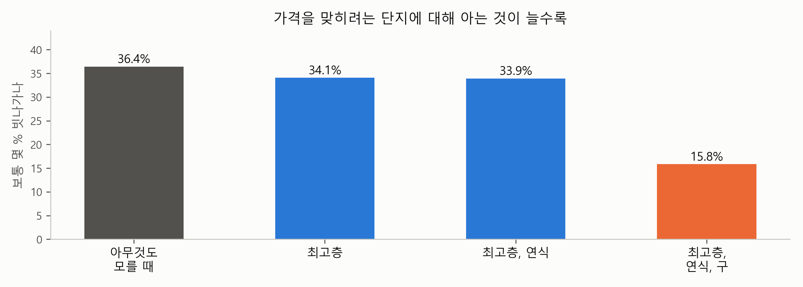
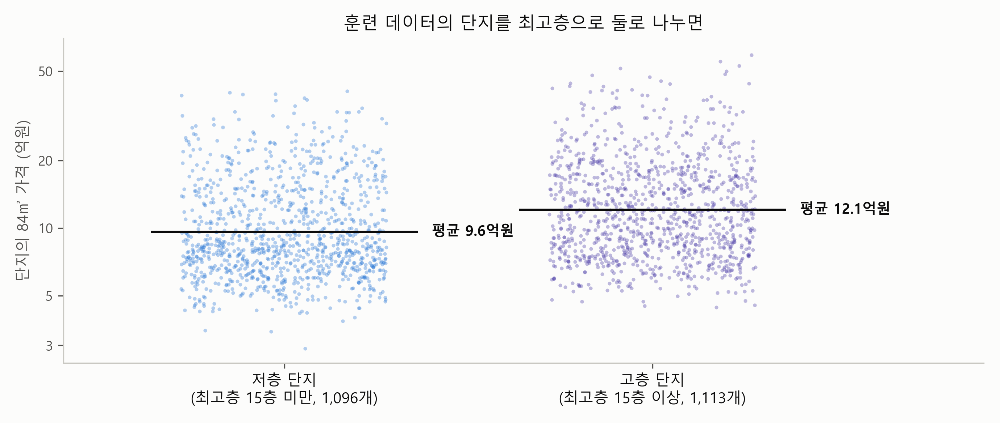

2. 설명하기와 맞히기 — 오차로 채점한다#
이 장 첫머리의 보고서는 요약 첫 줄에서 이렇게 말합니다.
구, 연식, 최고층만 알 때 닮은 단지 10개의 가격을 평균해 처음 보는 단지의 84㎡ 가격을 예측하면 보통 15% 빗나간다. 회귀식으로는 16%, 모든 단지를 전체 평균 가격 하나로 예측하면 36%다.
이 절에서는 세 숫자 가운데 회귀식의 16%를 봅니다. 회귀식은 다중회귀분석 장에서 이미 다룬 것인데, 그 장의 보고서 어디에도 “16% 빗나간다” 같은 문장은 없었습니다. 그 장은 계수를 해석했고, 이 장은 얼마나 빗나갔는지를 따지기 때문입니다. 이 절의 물음은 세 가지입니다. 같은 회귀식을 설명에 쓸 때와 맞히는 데 쓸 때 무엇이 다른가. “보통 16% 빗나간다”는 어떻게 계산한 숫자인가. 16%는 잘 맞힌 것인가.
왜 그런지 몰라도 맞힐 수 있다#
설명하는 일과 맞히는 일은 비슷해 보이지만 묻는 것이 다릅니다. 일상의 예로 먼저 감을 잡아 보죠.
학교 앞 편의점 점주는 시험 기간이 되면 에너지 음료가 평소의 두 배쯤 팔린다는 것을 경험으로 압니다. 그래서 시험 기간 전 주에 에너지 음료를 넉넉히 들여놓습니다. 점주에게 필요한 것은 “다음 주에 몇 개 팔릴까”의 답입니다. 학생들이 잠을 줄여서 그런지, 친구가 마시니 따라 마시는 것인지는 몰라도 됩니다. 몇 개 팔릴지만 맞히면 재고가 남지도 모자라지도 않습니다.
넷플릭스의 추천도 같습니다. 내가 어떤 영화를 왜 좋아하는지 넷플릭스는 알지 못합니다. 그래도 “이 영화를 끝까지 본 사람들은 저 영화도 끝까지 봤다”는 기록만으로 내가 볼 만한 영화를 꽤 잘 맞힙니다. 카드 회사도 그렇습니다. 평소 서울에서만 쓰이던 카드로 새벽에 해외 쇼핑몰에서 큰 금액이 결제되면, 왜 그런 일이 생겼는지 몰라도 도용일 가능성이 높다고 맞힐 수 있습니다.
반대로 맞히는 것만으로는 부족한 일도 있습니다. 음료 회사의 담당자가 “가격을 100원 내리면 더 팔릴까”를 알고 싶다면, 판매량이 무엇에 따라 달라지는지를 따져야 합니다. 의사가 약을 처방하려면 환자가 왜 아픈지 알아야 하고, 정부가 정책을 정하려면 무엇이 집값을 움직이는지 알아야 합니다.
정리하면 이렇습니다. 설명하기는 변수 하나하나에 관심이 있습니다. 층이 높으면 가격이 얼마나 높은가, 오래된 아파트는 얼마나 낮은가. 맞히기는 답 하나하나에 관심이 있습니다. 이 단지는 얼마인가.
설명할 때는 변수와 결과의 관계를 숫자로 나타낸 계수가 주인공이고, 맞힐 때는 모형이 내놓은 답이 실제와 얼마나 가까운지가 전부입니다.
같은 회귀식, 다른 쓰임#
이제 회귀식으로 돌아옵니다. 보고서의 회귀식은 다중회귀분석 장의 식과 같은 꼴입니다. 가격에 로그를 취하고, 최고층과 연식, 연식의 제곱, 구를 넣었습니다. 모든 단지가 84㎡이니 면적은 넣지 않았습니다. 채점에 쓰려고 500개를 숨겨 두고 남은 2,209개 단지로 계산하면 이렇게 나옵니다.
구의 계수는 구마다 하나씩 있고, 노원구가 기준(0)입니다. 가격은 단지의 가격, 즉 그 단지의 84㎡ 중위 거래가이고, 최고층은 그 단지에서 거래된 집 가운데 가장 높은 층입니다.
이 식을 설명에 쓸 때는 계수를 봅니다. 최고층의 계수 0.0228은 구와 연식이 같을 때 최고층이 한 층 높은 단지의 가격이 2.3% 높다는 뜻입니다. 다중회귀분석 장이 한 일이 이것이었습니다. 계수마다 표준오차와 \(p\)값을 따져, 그 관계가 우연으로 보기 어려운지도 확인했습니다.
같은 식을 맞히는 데 쓸 때는 계수를 해석하지 않고 식에 숫자를 넣습니다. 채점하려고 따로 떼어 둔 500개 단지, 곧 시험 데이터에서 한 곳을 꺼내 보죠. 성북구에 있는, 지은 지 21년 되고 최고층이 15층인 단지입니다. 성북구의 계수는 0.108입니다. 식에 넣으면 이렇게 됩니다.
나온 값은 가격의 로그이므로 가격으로 되돌립니다. \(e^{2.080}\) ≈ 8.00이니, 회귀식이 내놓은 답은 8.00억원입니다. 이렇게 모형이 내놓은 답을 예측값(predicted value)이라고 합니다. 계수가 무슨 뜻인지 하나도 몰라도 이 계산은 할 수 있습니다. 필요한 것은 식과 단지의 구, 연식, 최고층뿐입니다.
한 단지씩 채점한다#
예측값이 나왔으니 채점할 차례입니다. 시험 데이터의 단지에는 정답이 있습니다. 이 성북구 단지의 실제 가격은 9.80억원입니다. 회귀식은 8.00억원이라고 했으니 1.80억원 낮게 빗나갔습니다. 실제 가격 9.80억원에 대한 비율로는 18%입니다.
이 장에서는 빗나간 정도를 이렇게 실제 가격에 대한 비율로 계산합니다. 예측한 가격이 실제 가격보다 높았는지 낮았는지는 가리지 않고, 얼마나 멀었는지만 봅니다. 이것을 한 단지의 오차라고 부르겠습니다.
오차 = 예측한 가격이 실제 가격에서 벗어난 크기 ÷ 실제 가격
왜 금액이 아니라 비율일까요? 1억원 빗나간 것의 무게가 단지마다 다르기 때문입니다. 가격이 5억원인 단지를 6억원이라고 하면 크게 틀린 것이지만, 30억원인 단지를 31억원이라고 하면 꽤 잘 맞힌 것입니다. 금액으로 채점하면 비싼 단지 몇 곳이 점수를 좌우합니다. 단순회귀분석 장에서 가격에 로그를 취해 “퍼센트의 눈금”으로 바꿨던 것과 같은 까닭입니다.
표 2-1은 시험 데이터의 단지 가운데 다섯 곳을 골라 채점한 것입니다. 잘 맞힌 것부터 크게 빗나간 것까지 차례로 놓았습니다.
표 2-1. 회귀식으로 예측한 다섯 단지 (시험 데이터의 단지, 가격은 84㎡ 중위 거래가)
구 |
연식 |
최고층 |
회귀식의 예측 |
실제 가격 |
오차 |
|---|---|---|---|---|---|
노원구 |
26년 |
24층 |
8.67억원 |
8.60억원 |
0.8% |
송파구 |
35년 |
10층 |
13.38억원 |
14.60억원 |
8.4% |
성북구 |
21년 |
15층 |
8.00억원 |
9.80억원 |
18.3% |
마포구 |
11년 |
19층 |
17.60억원 |
27.60억원 |
36.2% |
양천구 |
27년 |
16층 |
9.59억원 |
5.78억원 |
66.0% |
표에서 보듯이 같은 회귀식인데도 단지마다 오차가 크게 다릅니다. 첫 행의 노원구 단지는 700만원 차이로 맞혔고, 마지막 행의 양천구 단지는 실제보다 4억원 가까이 높게 불렀습니다. 넷째 행의 마포구 단지는 반대로 10억원 가까이 낮게 불렀습니다. 회귀식이 아는 것은 구, 연식, 최고층뿐입니다. 같은 구 안에서도 단지에 따라 가격이 크게 다르다는 것을 앞 절에서 봤는데, 회귀식은 그 차이를 알 길이 없습니다.
500개 단지의 점수를 숫자 하나로#
시험 데이터의 단지는 500개입니다. 한 곳 한 곳의 오차를 모두 계산하면 숫자가 500개 나옵니다. 그림 2-1은 그 결과를 두 가지로 그린 것입니다.

그림 2-1. 시험 데이터 500개 단지를 회귀식으로 예측한 결과. 왼쪽: 점 하나가 단지 하나. 실선 위의 점은 예측과 실제가 같은 단지이고, 두 점선 사이에 단지의 절반이 있다. 오른쪽: 단지마다 계산한 오차를 작은 것부터 큰 것까지 한 줄로 세운 것. 주황 선은 한가운데 단지, 점선은 평균이다.
그림에서 보듯이 왼쪽 패널에서는 점 하나가 단지 하나이고, 점들은 실선을 따라 길게 모여 있습니다. 실선은 예측한 가격과 실제 가격이 똑같은 자리입니다. 점이 실선 위쪽에 있으면 실제 가격이 예측보다 높았던 단지이고, 아래쪽에 있으면 낮았던 단지입니다. 점들은 실선 양쪽에 비슷하게 퍼져 있습니다. 예측이 실제보다 높았던 단지와 낮았던 단지가 절반씩이어서, 회귀식이 한쪽으로 치우쳐 빗나가지는 않았습니다. 실선 양옆의 두 점선 사이에는 500개 단지의 절반이 들어 있습니다.
오른쪽 패널은 오차 500개를 작은 것부터 큰 것까지 한 줄로 세운 것입니다. 왼쪽 끝은 거의 정확히 맞힌 단지이고, 오른쪽으로 갈수록 크게 빗나간 단지입니다. 줄은 대부분 낮게 깔려 있다가 맨 오른쪽 몇 곳에서 가파르게 솟습니다. 5% 안쪽으로 맞힌 단지가 15%, 10% 안쪽으로 맞힌 단지가 32%입니다. 한편 50% 넘게 빗나간 단지도 6% 있습니다.
이 500개를 숫자 하나로 줄여야 “이 모형은 몇 점”이라고 말할 수 있습니다. 이 장에서는 중위값을 씁니다. 오차가 작은 단지부터 큰 단지까지 한 줄로 세웠을 때 한가운데 있는 단지의 오차입니다. 그림 2-1 오른쪽 패널의 주황 선이 그 자리이고, 계산 결과는 15.8%입니다. 보고서의 요약은 이것을 반올림해 “보통 16% 빗나간다”고 썼습니다. 500개 단지 가운데 절반은 이보다 작게 빗나갔고, 나머지 절반은 이보다 크게 빗나갔다는 뜻입니다. 보고서 해석의 첫 항목이 이 읽는 법을 적어 둔 것입니다. 표 2-1의 셋째 행, 18.3% 빗나간 성북구 단지가 한가운데에서 멀지 않은 단지입니다.
평균을 쓰지 않은 데는 이유가 있습니다. 500개의 평균은 19.9%로, 중위값보다 큽니다. 아주 크게 빗나간 몇 곳이 평균을 끌어올리기 때문입니다. 오른쪽 패널에서 평균의 점선이 한가운데 단지보다 높이 그어진 것은 맨 오른쪽에 솟은 몇 곳 때문입니다. 가장 크게 빗나간 단지는 오차가 160%입니다. 실제 가격이 11억원쯤인 단지를 28억원쯤이라고 한 것입니다. 이런 단지 몇 곳 때문에 평균이 움직이면, 점수가 보통의 단지를 얼마나 잘 맞히는지를 말해 주지 못합니다. 중위값은 그런 몇 곳에 끌려가지 않습니다. “보통 몇 % 빗나간다”의 “보통”은 이 중위값을 가리키는 말입니다.
금액으로 따지면 보통 1.6억원쯤 빗나갔습니다. 시험 데이터의 중위 가격이 9.8억원이니 작지 않은 금액입니다.
참고: 모형의 점수를 숫자 하나로 줄이는 방법이 중위값만 있는 것은 아닙니다. AI가 내놓는 결과에는 다른 점수가 더 자주 나옵니다. 빗나간 크기를 그대로 평균한 평균절대오차(mean absolute error, MAE)와, 빗나간 크기를 제곱해서 평균한 평균제곱오차(mean squared error, MSE)입니다. 제곱을 하면 크게 빗나간 것일수록 훨씬 무겁게 셉니다. 그래서 크게 빗나가는 일이 특히 곤란한 문제에서는 평균제곱오차를 많이 씁니다. 이 장은 보통의 단지를 얼마나 잘 맞히는지를 알고 싶어서 중위값을 골랐습니다. 어느 것을 쓰든, 점수를 볼 때는 무엇을 어떻게 계산한 숫자인지부터 확인합니다.
16%는 잘 맞힌 것인가#
보통 16% 빗나간다는 것은 잘 맞힌 것일까요, 못 맞힌 것일까요? 숫자 하나만 놓고는 답할 수 없습니다. 비교할 상대가 있어야 합니다.
단순회귀분석 장의 몸무게 맞히기 내기를 떠올려 보세요. 처음 보는 사람의 몸무게를 맞혀야 하는데 아무 정보도 없다면, 가장 안전한 답은 평균 몸무게였습니다. 키를 알려 주면 그보다 잘 맞힐 수 있고, 얼마나 나아졌는지가 키라는 정보의 가치였습니다.
아파트도 같습니다. 단지에 대해 아무것도 모른다면 가장 안전한 답은 평균 가격입니다. 훈련 데이터, 곧 규칙을 계산하는 데 쓴 2,209개 단지의 평균 가격은 10.8억원입니다(로그가격의 평균을 가격으로 되돌린 값입니다). 시험 데이터 500개 단지 모두에 “10.8억원”이라고 답하고 같은 방법으로 채점하면, 보통 36.4% 빗나갑니다. 보고서의 표에서 “전체 평균 가격 하나로”라고 적힌 행이 이것입니다. 어떤 모형이든 이 점수보다는 나아야 쓸모가 있으므로, 이 점수가 비교의 출발점이 됩니다.
표 2-2는 여기서 출발해, 회귀식에 변수를 하나씩 더하며 채점한 결과입니다. 그림 2-2는 같은 숫자를 막대로 그린 것입니다.
표 2-2. 단지에 대해 아는 것이 늘수록 (시험 데이터 500개 단지로 채점)
회귀식에 넣은 변수 |
오차 |
\(R^2\) |
|---|---|---|
없음 (전체 평균 가격 하나로) |
36.4% |
0.00 |
최고층 |
34.1% |
0.13 |
최고층, 연식 |
33.9% |
0.22 |
최고층, 연식, 구 |
15.8% |
0.75 |
주: 오차는 단지마다 계산한 오차의 중위값. 가격은 로그, 연식은 제곱항을 함께 넣었다. \(R^2\)은 로그가격 기준.

그림 2-2. 회귀식에 변수를 하나씩 더할 때, 시험 데이터에서 보통 몇 % 빗나가는가.
표에서 보듯이 아는 것이 늘수록 오차가 줄어듭니다. 최고층을 알면 36.4%에서 34.1%로 줄어듭니다. 연식을 더하면 오차는 33.9%로 거의 그대로이고 \(R^2\)만 0.13에서 0.22로 오릅니다. 가장 크게 줄어드는 것은 구를 더할 때입니다. 33.9%가 15.8%가 됩니다. 구를 맨 나중에 더해서 그런 것은 아닙니다. 회귀식에 최고층만 넣으면 오차가 34.1%, 연식만 넣어도 34.1%인데, 구만 넣으면 22.0%입니다. 서울에서는 단지가 어느 구에 있는지가 가격을 맞히는 데 가장 큰 도움이 됩니다.
그러니 16%는 “아무것도 모를 때의 36%를 세 가지 정보로 절반 아래로 줄인 점수”입니다. 못 맞힌 것은 아닙니다. 그렇다고 넉넉한 점수도 아닙니다. 가격이 10억원인 단지라면 1억 6천만원쯤 빗나가는 것이 보통이라는 뜻이니까요. 집을 내놓으려는 사람이 이 숫자만 믿고 값을 부르기는 어렵습니다. 세 가지 정보만으로는 여기까지라는 것, 이것이 회귀식의 점수입니다.
표의 오른쪽 열 \(R^2\)은 단순회귀분석 장에서 배운 그 \(R^2\)입니다. 평균으로 예측할 때의 흩어짐 가운데 회귀식이 줄여 준 몫이었죠. 다만 여기서는 훈련 데이터가 아니라 시험 데이터로 계산했습니다. 전체 평균 가격 하나로 예측하면 줄여 준 것이 없으니 0이고, 세 변수를 모두 넣은 회귀식은 0.75입니다. 오차와 \(R^2\)은 같은 것을 다른 눈금으로 잰 점수여서, 한쪽이 좋아지면 다른 쪽도 대개 좋아집니다. 이 장에서는 주로 오차로 말하고, \(R^2\)은 보고서의 그림 오른쪽 패널을 볼 때와 닮은 단지를 몇 개 볼지 따질 때 다시 씁니다.
분명한 관계와 잘 맞히는 것은 다르다#
표 2-2에는 설명하기와 맞히기의 차이를 보여 주는 행이 하나 있습니다. 최고층입니다.
최고층은 가격과 관계가 분명한 변수입니다. 이 장의 회귀식에서 최고층의 계수는 0.0228이고 \(p\)값은 0.001보다 훨씬 작습니다. 구와 연식이 같다면 고층 단지일수록 가격이 높다는 것은 우연으로 보기 어렵습니다. 가격의 차이를 설명하려는 사람에게 최고층은 빼놓을 수 없는 변수입니다.
그런데 최고층만으로는 가격을 거의 맞히지 못합니다. 표에서 최고층 하나만 넣은 회귀식으로 예측하면 오차는 34.1%로, 아무것도 모를 때의 36.4%에서 조금 줄어들 뿐입니다.
두 사실은 서로 어긋나지 않습니다. 남자의 평균 키가 여자보다 크다는 것은 분명한 사실입니다. 그렇다고 성별만 듣고 한 사람의 키를 맞힐 수는 없습니다. 같은 남자끼리도 키가 제각각이기 때문입니다. 최고층도 같습니다. 고층 단지의 가격이 평균적으로 더 높다는 것은 분명하지만, 최고층이 같은 단지끼리도 가격은 크게 다릅니다. 그래서 최고층만 알아서는 한 단지의 가격을 거의 맞힐 수 없습니다. 그림 2-3이 이 생각을 이 장의 데이터로 보여 줍니다.

그림 2-3. 훈련 데이터의 단지 2,209개를 최고층의 중위값인 15층을 기준으로 둘로 나눈 것. 점 하나가 단지 하나이고, 검은 선은 평균 가격(로그가격의 평균을 가격으로 되돌린 값)이다.
그림에서 보듯이 고층 단지의 평균은 12.1억원으로, 저층 단지의 9.6억원보다 분명히 높습니다. 그런데 두 무리의 점은 거의 같은 높이에 넓게 퍼져 있습니다. 5억원대에도 20억원대에도 저층 단지와 고층 단지가 함께 있습니다. 어떤 단지가 고층이라는 것만 듣고는 그 단지가 6억원인지 20억원인지 짐작할 수 없습니다. 평균의 차이는 분명해도, 한 단지의 가격을 맞히기에는 정보가 모자랍니다.
설명하는 보고서에서 계수의 \(p\)값이 아주 작다고 해서, 그 변수로 잘 맞힐 수 있다는 뜻은 아닙니다. 거꾸로, 잘 맞히는 모형이라고 해서 변수와 가격의 관계를 잘 설명해 주는 것도 아닙니다. 이 장의 보고서에서 오차가 가장 작은 모형은 닮은 단지 10개의 가격을 평균해 예측하는 모형입니다(15%). 그런데 이 모형에는 계수가 하나도 없습니다. 최고층이 한 층 높으면 가격이 얼마나 높은지를 알아낼 수조차 없는데도, 가격은 가장 잘 맞힙니다.
설명하는 보고서, 맞히는 보고서#
이제 이 장의 보고서가 다중회귀분석 장의 보고서와 왜 다르게 생겼는지 말할 수 있습니다. 머신러닝은 답이 달린 예에서 컴퓨터가 규칙을 계산해, 아직 모르는 것을 맞히는 방법이었습니다. 그래서 머신러닝의 보고서는 계수를 해석하지 않고, 얼마나 잘 맞혔는지를 보여 줍니다. 표 2-3은 둘을 나란히 놓은 것입니다.
표 2-3. 설명하는 보고서와 맞히는 보고서
설명하는 보고서 (다중회귀분석 장) |
맞히는 보고서 (이 장) |
|
|---|---|---|
묻는 것 |
무엇이 가격의 차이를 설명하는가 |
처음 보는 단지의 가격을 얼마나 잘 맞히는가 |
보는 숫자 |
변수마다의 계수 |
예측값이 실제에서 벗어난 오차 |
표의 행 |
변수 (면적, 층, 연식, 구) |
모형 (회귀식, 닮은 단지) |
믿을 만한지 따지는 법 |
표준오차, \(p\)값 |
시험 데이터로 채점한 점수 |
쓰는 모형 |
계수를 해석할 수 있는 식 |
잘 맞히기만 하면 무엇이든 |
표에서 보듯이 두 보고서는 같은 데이터와 같은 꼴의 회귀식에서 출발해도 전혀 다른 표를 내놓습니다. 설명하는 보고서의 표에서는 행마다 변수가 있고 계수와 \(p\)값이 적혀 있습니다. 맞히는 보고서의 표에서는 행마다 모형이 있고 오차가 적혀 있습니다. AI에게 분석을 부탁할 때도 이 차이를 알고 있어야 합니다. “최고층, 연식, 구가 가격과 어떤 관계가 있는지 분석해 줘”와 “최고층, 연식, 구로 가격을 예측하는 모형을 만들어 줘”는 서로 다른 보고서를 부르는 요청입니다.
맞히는 보고서에서 가장 중요한 칸은 표의 넷째 행, “시험 데이터로 채점한 점수”입니다. 이 절에서 본 숫자는 모두 시험 데이터로 채점한 것이었습니다. 훈련 데이터로 채점하면 어떻게 될까요? 회귀식은 거의 같은 점수가 나오지만, 닮은 단지는 전혀 다른 점수가 나옵니다. 다음 절에서 봅니다.
요약 — 이 절의 물음과 답
같은 회귀식을 설명에 쓸 때와 맞히는 데 쓸 때 무엇이 다른가? 설명할 때는 계수를 해석하고, 맞힐 때는 식에 단지의 구, 연식, 최고층을 넣어 가격을 계산한다. 이렇게 나온 답을 예측값이라고 한다. 맞히는 데는 계수의 뜻을 몰라도 된다.
“보통 16% 빗나간다”는 어떻게 계산했나? 시험 데이터 500개 단지마다 예측한 가격이 실제 가격에서 벗어난 비율(오차)을 계산하고, 그 중위값을 골랐다. 단지의 절반은 이보다 작게, 절반은 이보다 크게 빗나갔다. 몇 곳이 아주 크게 빗나가 평균(19.9%)은 쓰지 않았다.
16%는 잘 맞힌 것인가? 아무것도 모르고 전체 평균 가격 하나로 예측하면 36% 빗나간다. 최고층, 연식, 구를 알면 그것이 16%로 줄어든다. 가장 크게 줄여 주는 것은 구다. 최고층은 가격과 관계가 분명한 변수이지만 그것만으로는 가격을 거의 맞히지 못한다.